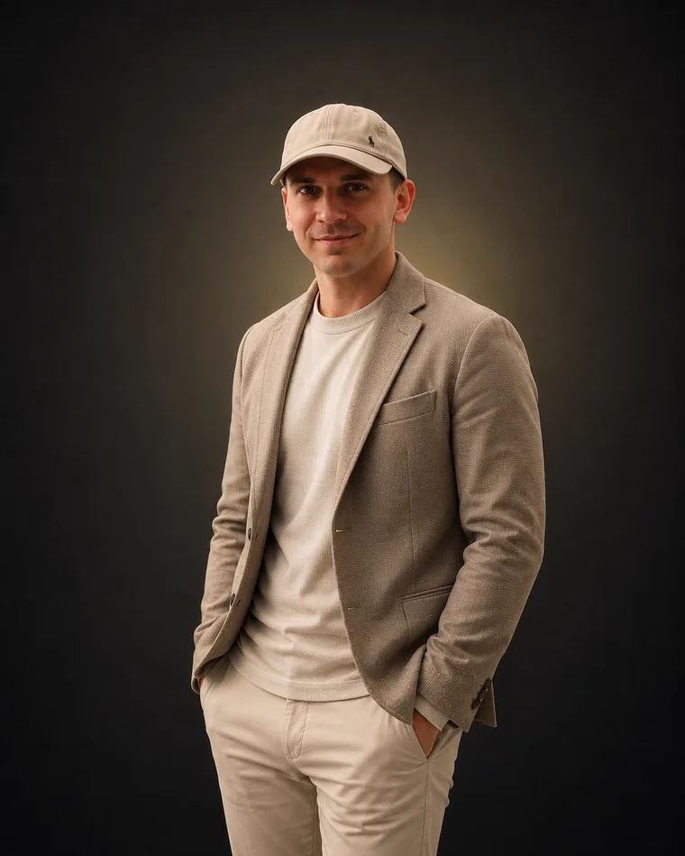
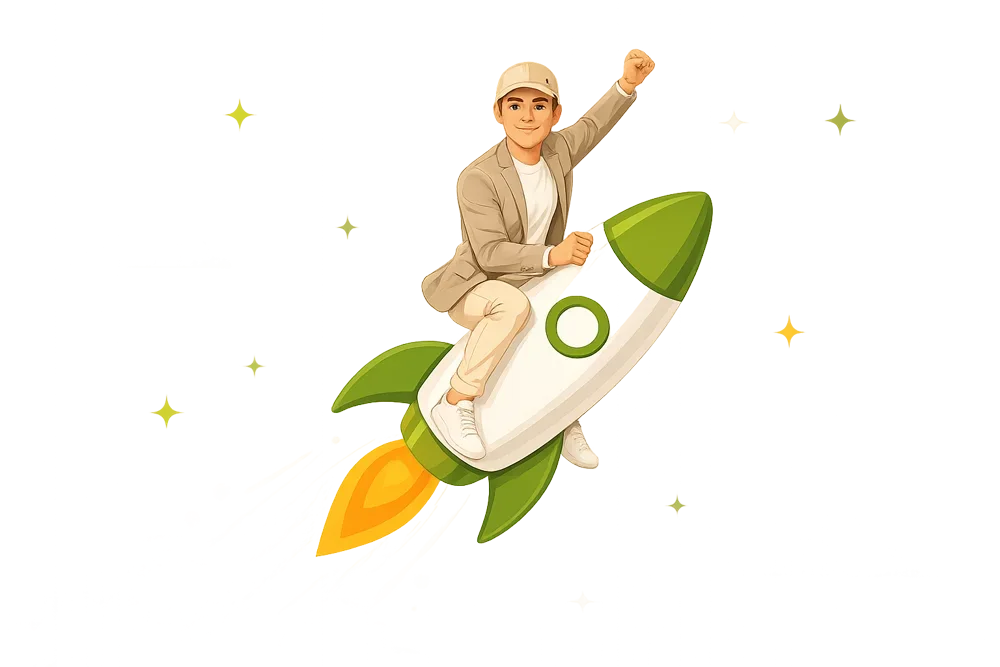

Nach einer Zusammenarbeit mit mir braucht ihr definitiv mehr Monteure. Zum Glück kann ich da auch helfen.
Anfragen, die nur bei euch ankommen.
Ich baue und betreibe den Weg von der Anzeige bis zum vereinbarten Termin: Kampagnen auf Google und Meta, eine eigene Landingpage, sauberes Tracking. Eine kleine Setup-Gebühr zum Start, danach hängt meine Vergütung an euren Ergebnissen.
Eine Seite mit einem Ziel: euren Betrieb, eure Montagen, eure Region. Kein Vergleichsformular, hinter dem vier Wettbewerber stehen.
Wer „Photovoltaik“ und den eigenen Ort eintippt, hat den Entschluss im Kopf. Über Suchanzeigen steht ihr in diesem Moment oben.
Die meisten Eigentümer suchen nicht. Sie ärgern sich über die Abrechnung und machen weiter. Genau die erreicht ihr über Facebook und Instagram.
Ihr tragt die Werbekosten plus eine erfolgsabhängige Vergütung. Ein Formular, das im Nichts endet, geht zu meinen Lasten.
Von der Analyse bis zur Skalierung
Nach jeder Phase bekommt ihr eine kurze Einordnung, was gut lief und was ausbaufähig ist.
Ich schaue mir Region, Wettbewerb und Marge pro Anlage an und sage euch, ob ich Potenzial sehe.
Google, Meta oder erst eines von beiden. Danach steht, mit welcher Botschaft ihr wen ansprecht.
Landingpage, Tracking und Kampagnen. Das Tracking steht vor der ersten Anzeige, nicht danach.
Die Kampagne läuft kontrolliert an. Erste Woche: viel messen, wenig anfassen.
Was Termine bringt, bekommt mehr Budget. Der Rest fliegt raus.

„Ich verdiene erst, wenn ihr Ergebnisse seht. Alles andere wäre für mich keine Partnerschaft.“
Ich bin Marc Richter und habe MR Elevate 2025 in Dresden gegründet, mit einer unbequemen Überzeugung: Eine Agentur sollte am Umsatz gemessen werden, den sie bringt. Von Klicks und Reichweite ist noch keine Rechnung bezahlt worden.
Deshalb arbeite ich fast ausschließlich erfolgsbasiert. Photovoltaik passt zu diesem Modell: hoher Auftragswert, ein langer Weg von der ersten Anzeige bis zur Unterschrift, und ein Markt, in dem Sichtbarkeit gerade wieder darüber entscheidet, wer den Auftrag bekommt. Was herauskommen soll, ist ein Kanal, der Termine liefert. Und den ich nur dann verdiene, wenn er das tut.
Dabei stehe ich nicht allein: Ich arbeite eng mit einem Netzwerk erfahrener Performance-Marketer zusammen und ziehe deren Einschätzung hinzu, wenn es die Sache besser macht. Dieses Wissen fließt direkt in jede Kampagne ein, die ich für euch aufsetze.
Ihr zahlt für vereinbarte Termine, nicht für Reichweite.
Passt das zu mir? Jetzt prüfenEinmalig, fair kalkuliert und vor Projektstart schriftlich fixiert. Deckt Funnel, Tracking und Kampagnen-Aufbau.
Fließt direkt an Meta oder Google, nicht an mich. Ihr seht jederzeit, wohin das Budget geht.
Wird erst fällig, wenn messbare Ergebnisse entstehen, definiert und schriftlich festgehalten im Analysegespräch.
Erstverträge laufen bei mir maximal 3 bis 6 Monate, bewusst überschaubar. Andere Laufzeiten besprechen wir individuell.

Die Fragen, die Solarbetriebe im Analysegespräch stellen.
Der Zubau hat sich verschoben, nicht aufgelöst: 2025 gingen in Deutschland rund 863.000 Anlagen mit zusammen 16,4 Gigawatt ans Netz. Verändert hat sich, dass das Dachgeschäft nicht mehr mitwächst und sich diese Menge auf mehr Betriebe verteilt. Im Boom ging es darum, Aufträge abzuarbeiten. Jetzt geht es darum, die vorhandene Nachfrage zu euch zu lenken statt zum Wettbewerber.
Ein gekaufter Lead wird bei den meisten Portalen mehrfach verkauft, oft an vier bis fünf Betriebe gleichzeitig. Der Interessent bekommt mehrere Angebote und vergleicht in erster Linie den Preis. Eine Anfrage über eure eigene Anzeige und eure eigene Seite kommt nur bei euch an. Der Unterschied zeigt sich nicht im Preis pro Kontakt, sondern in der Marge am Ende.
Bei knappem Budget zuerst eines von beiden, sonst bekommt keine der Plattformen genug Daten. Google passt, wenn Menschen in eurer Region bereits nach Photovoltaik suchen. Meta passt, wenn ihr Bedarf erst wecken müsst, etwa bei Eigentümern, die noch gar nicht über eine Anlage nachdenken. In den meisten Fällen ist Google der schnellere Einstieg, weil die Absicht schon da ist.
Eine kleine, faire Setup-Gebühr zu Beginn deckt den Aufbau von Landingpage, Tracking und Kampagnen. Danach zahlt ihr eure Werbekosten, die direkt an Google oder Meta fließen, plus eine erfolgsabhängige Vergütung. Einen klassischen Retainer ohne Gegenwert gibt es bei mir nicht.
Ein Interessent, den ich tatsächlich erreicht habe und mit dem ein Erstgespräch bei euch vereinbart ist. Ein Klick auf die Anzeige zählt nicht, ein ausgefülltes Formular allein auch nicht. Formulare, die im Nichts enden, gehen zu meinen Lasten und nicht zu euren.
Weil Empfehlungen nicht steuerbar sind. Sie kommen, wenn sie kommen, und in einem Monat mit wenig Zulauf lässt sich nichts nachlegen. Solange der Kalender voll ist, ist das kein Problem. Es wird eines, sobald eine Lücke entsteht, denn ein Werbekanal braucht Vorlauf, bis er verlässlich liefert. Der richtige Zeitpunkt zum Aufbau ist deshalb nicht der, an dem es eng wird.
Wenn Anfragen liegen bleiben, weil niemand zeitnah zurückruft, macht Werbung das Problem nur teurer sichtbar. Dasselbe gilt, wenn sich offene Baustellen und Reklamationen stapeln oder wenn das Ziel vor allem ist, billiger zu sein als der Wettbewerb. In diesen Fällen sage ich im Analysegespräch ab.
Nach dem Setup lasse ich die Kampagne kontrolliert anlaufen. Erste Anfragen sind oft in den ersten Wochen realistisch, belastbar wird die Bewertung aber erst nach der Lernphase der Plattform. Wie schnell es bei euch geht, hängt von Region, Angebot und Budget ab.
Kostenloses Analysegespräch. Wir sehen uns Region, Marge und Wettbewerb an. Danach wisst ihr, ob sich ein eigener Anfragekanal rechnet und mit welchem Kanal ihr anfangen solltet. Bleiben Anfragen bei euch liegen, sage ich das, bevor Budget fließt.